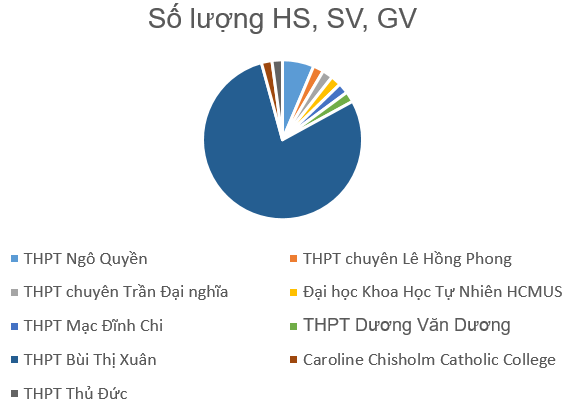
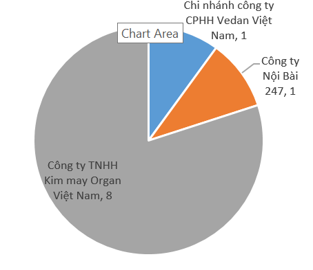
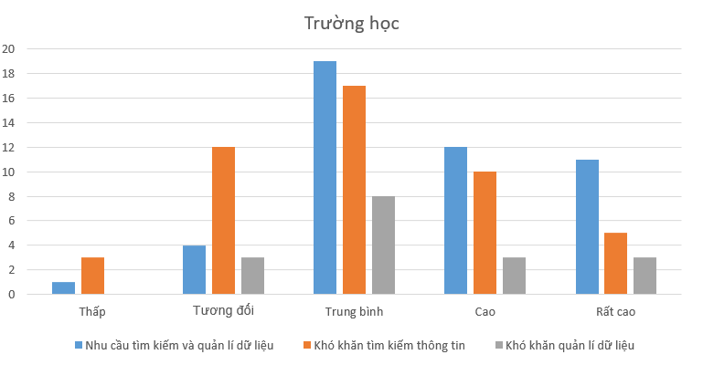
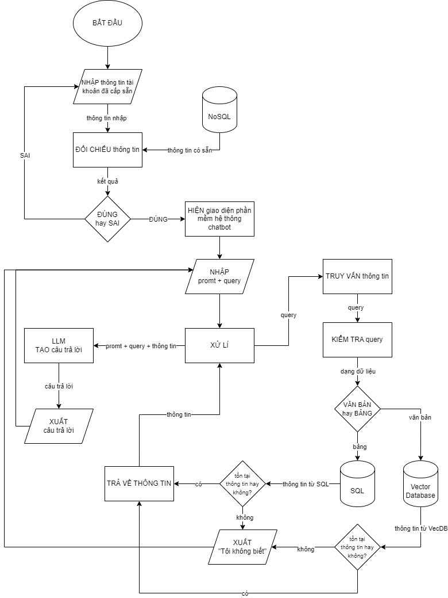
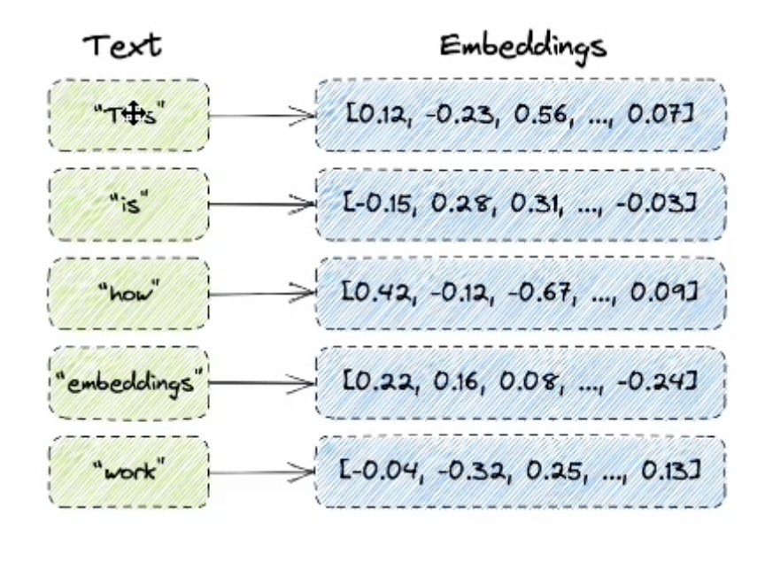
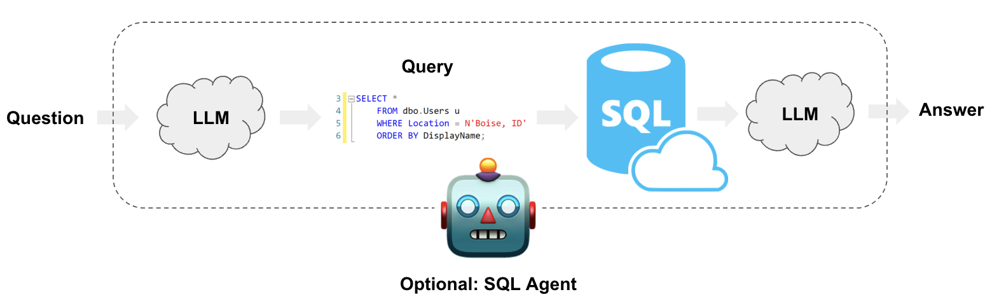
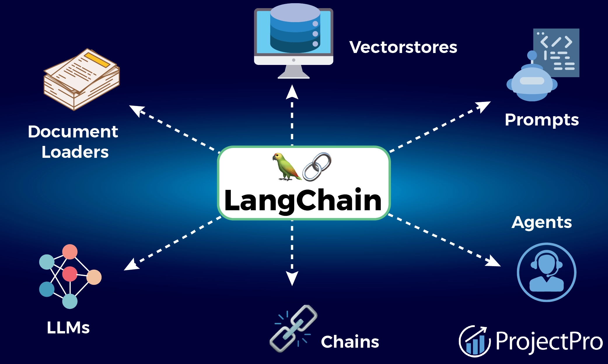
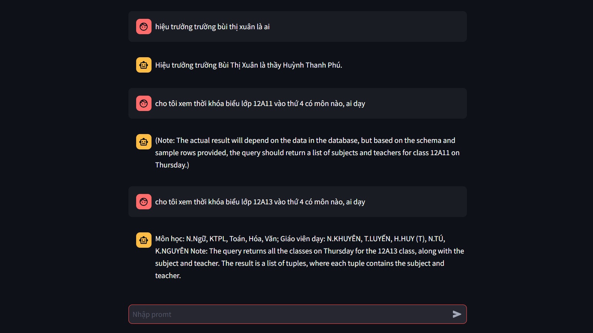
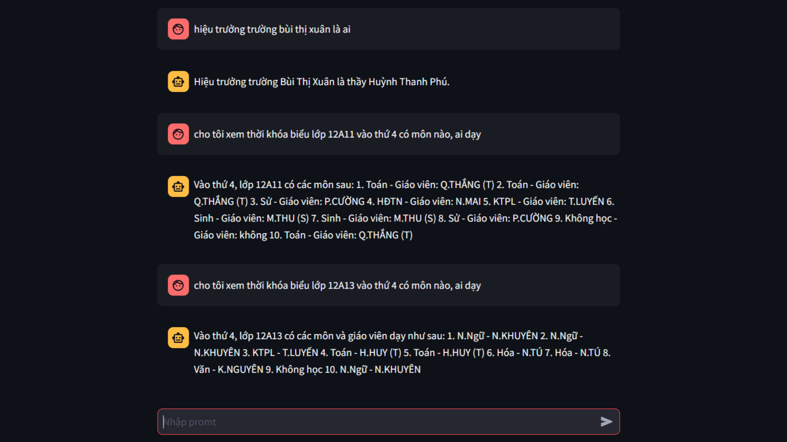
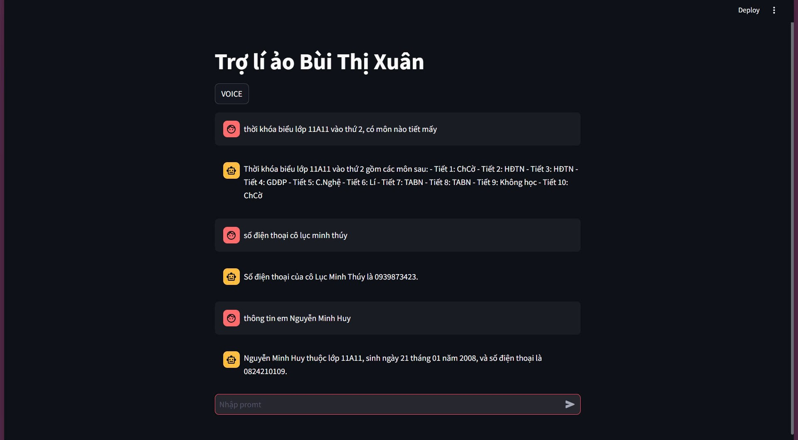

Virtual Information Assistant
A retrieval-augmented assistant for searching and managing school and organizational information across documents, websites, and structured databases.
A chatbot designed to answer information-management questions by combining RAG-based semantic retrieval for unstructured data with SQL-based querying for structured data such as schedules and tables.
School and organizational information is often distributed across PDFs, spreadsheets, documents, websites, and relational tables. Finding the right information can require switching between systems and manually identifying where the answer is stored.
The research question was: How can an automated chatbot help schools and organizations retrieve and manage information more efficiently than traditional methods?
We surveyed 60 participants, primarily students, teachers, and school-related users in Ho Chi Minh City, alongside participants from companies and organizations. The survey indicated substantial demand for finding and managing information, while difficulties in information retrieval and management were also common.



The system was designed around two complementary retrieval paths. Unstructured text and web content are processed through a RAG pipeline, while structured data such as timetables is queried through a SQL agent.

- Documents: PDF, CSV/Excel, and DOC content is loaded and normalized with LangChain document loaders.
-
Web data: school websites are collected with
Requestsand parsed withBeautifulSoupbefore normalization. - Structured data: tables such as timetables are converted and stored in a relational SQL database for direct querying.
Text and web content are split into smaller chunks with
RecursiveCharacterTextSplitter, converted into vector embeddings,
and indexed with FAISS for semantic retrieval.


Structured information is stored in SQLite and queried through LangChain's SQL tooling. A SQL agent converts natural-language questions into SQL queries, executes them, and returns the relevant records.

The prototype separates questions that require structured database access from those that can be answered through documents and web data. In the original system, timetable-related questions were routed to the SQL agent, while other questions were handled through the text/web retrieval path.
We compared Llama3-8B-8192 and GPT-4o during development.
Both performed well on simpler tasks, while GPT-4o was selected for the project
because it performed better on more complex search and question-answering tasks
over mixed information.
LangChain was used as the orchestration layer for retrieval,
embeddings, prompts, and SQL interaction, while Streamlit provided
the interactive web interface.

Why combine RAG and SQL? Documents and web pages are naturally suited to semantic retrieval, while highly structured information such as schedules is better represented and queried as relational data. Separating the two paths keeps each retrieval method aligned with the structure of the underlying data.
Why FAISS? The project needed a lightweight vector index for semantic retrieval without introducing a larger distributed database into the prototype.
Why Streamlit? Streamlit allowed the prototype interface to be built directly in Python and connected quickly to the underlying retrieval pipeline.
- User submits a natural-language question.
- The system determines which information source is appropriate.
- Text/web queries are handled through semantic retrieval and RAG.
- Structured queries are handled through the SQL agent.
- The LLM generates a natural-language response from the retrieved information.
The completed prototype provided a responsive interface and handled both simple and more complex information queries. The project documentation reports a maximum response time of around 10 seconds for difficult questions.



- Data privacy: school and organizational information may contain sensitive personal data, so access controls and data-protection mechanisms are important for real-world deployment.
- Model reliability: the assistant needs a fallback path for questions it cannot answer reliably or when an external model or retrieval component fails.
- Data quality: retrieval quality depends on consistent preprocessing, chunking, embeddings, and database structure.
- Introduce multi-agent routing for specialized domains and tasks.
- Add account and role-based access control for sensitive information.
- Improve retrieval and answer quality through broader evaluation datasets.
- Expand from school information to enterprise, public-service, healthcare, and other structured information environments.
- Improve scalability and reliability for larger information collections.
| Layer | Tools |
|---|---|
| Language | Python |
| LLM | GPT-4o |
| RAG / orchestration | LangChain |
| Embeddings | OpenAIEmbeddings · text-embedding-ada-002 |
| Vector search | FAISS |
| Web data | Requests · BeautifulSoup |
| Structured data | SQLite · SQL · pandas · PdfPlumber |
| Interface | Streamlit |
| Field | Software Systems |
| Project | Virtual Assistant for Managing Information & Data |
| Authors | Nguyen Minh Huy & Ha Chi Dung |
| Mentor | Bui Manh Tan |
| Institution | THPT Bui Thi Xuan, District 1, Ho Chi Minh City |
| Project code | 21_1001_10 |
| Date | August 2024 |
Open to conversations
and collaborations.
"I have no special talent. I am only passionately curious."
Albert Einstein